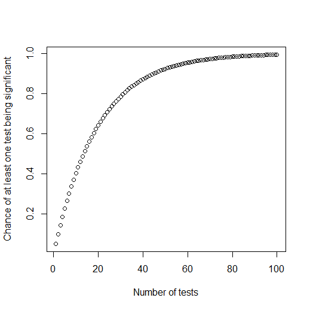

Whether you're doing a one-way ANOVA or a factorial ANOVA, you have the possibility of running multiple statistical
tests. If you do a factorial ANOVA, you're doing that automatically: at the very least the ANOVA will tell you the results of three
tests (whether the first main effect is significant, whether the second main effect is significant, and whether the interaction is
significant). If you do a one-way ANOVA, you might run multiple tests at a later step (if your ANOVA is significant, meaning that
there's some difference between your groups, then you might run a bunch of t-tests, comparing English vs. Mandarin, English vs.
Cantonese, and Cantonese vs. Mandarin).
In either of these situations you might face the multiple comparisons problem.
What statistical tests mean, and why multiple comparisons are a problem
Remember that a p-value tells you how likely the observed data are to have occurred if there were not
actually an effect in reality. The standard in most fields is that we only call something "significant" if the p-value is
below .05, i.e., below 5%. This has a specific, and important, consequence:
If we do a million experiments about a given topic, and the actual situation in the real world is that there is
no effect, then 5% of our experiments will falsely conclude that there is a real effect.
For this reason, p-values are considered a means of error control. In a single study, they
are pretty much meaningless; but as more and more people do studies about a phenomenon, the use of p-values will help make
sure that no more than 5% (or whatever other level is used in the field) of studies will wrongly conclude that there is an effect.
The limitation of this is that it assumes that your study has just one test of that important hypothesis. If there is
no effect in the real world, and you do one test (and you decided that you will only call your results "significant" if
p<.05), then there is a 5% chance that you will wrongly say there is an effect. However, if you use that same dataset to
make lots of tests of the same hypothesis, your chance of making a wrong conclusion increases.
Think of it like flipping a coin. If you flip a coin once, you have a 50% chance of getting heads. If you flip a coin
more times, it's more likely that you will eventually (at least once) get heads. If you flip the same coin 1 million times, there
must be an almost 100% chance that you'll get heads at least once. (If you flip the same coin 1 million times and never get heads,
you might start to suspect that it's not a fair coin! Maybe both of its sides are tails!)
The same thing when you do hypothesis tests. If there's really no effect in the real world, and you do an experiment
testing this once, there's a 5% chance that you will wrongly conclude there is an effect. But if you keep doing more and more tests,
there is a higher and higher likelihood that eventually you will (at least once) wrongly find an effect in one of those
experiments.
More specifically, if you keep repeatedly testing a hypothesis which is false, the chance of getting at least one
significant (where "significant" means p<.05) is \(1-.95^n\), where n is the number of tests you do. If you do 1 test,
your chance of it being significant (when there's not actually any effect in the real world) is .05 (plug in "1" where "n" is in the
above formula if you want to see the math for yourself), or 5%. If you do 5 tests, there's a 23% chance that at least one of them
will be significant. And if you do 100 tests, there's a 99% chance that at least one of them will be significant!
Keep in mind, this is for a situation where the hypothesis is false in the real world. That means if you
keep on doing lots of tests of the same hypothesis, you make it almost guaranteed
that you will eventually get one significant test, even if the hypothesis is false! You can see a graph of
this pattern below:

If you have been understanding this discussion so far, you should be terrified now.
How the multiple comparisons problem happens in ANOVA analyses
Imagine that you want to know if people's scores improve from their pre-test to their post-test (maybe there's some
theory that predicts this should happen). Furthermore, imagine that you also have different groups of people (English speakers vs.
Mandarin speakers, undergraduate vs. graduate students, etc.). Maybe you don't have specific hypotheses about those groups, but you
just collected them because you want to be able to explore potential differences.
Now you do a factorial ANOVA. You will get a lot of results, including the following:
Main effect of pre-test vs. post-test
Interaction between pre-post and native language (i.e., examining whether the pre-post difference for English speakers is bigger
than the pre-post difference for Mandarin speakers)
Interaction between pre-post and student level (i.e., examining whether the pre-post difference for undergraduates is bigger than
that for graduate students)
Interaction between pre-post, native language, and student level (i.e., maybe the pre-post difference for undergraduates is bigger
than for graduate students, but only among Mandarin speakers and not among English speakers)
etc...
Here we have a multiple comparisons problem. If you get a main effect of pre-test vs. post-test, you will say "The
post-test score was higher, my theory was right!" If you don't get that main effect but you do get an interaction with language
group, you will say, "Well, for some reason the effect only occurred with Mandarin speakers [and in the Discussion section I'll raise
some speculation about why it didn't happen for English speakers], but at least when we look at those Mandarin speakers: the
post-test score was higher, my theory was right!" And if you don't get either of the above effects, but you do get an interaction
with student level, you will say, "Well, for some reason the effect only occurred with undergraduates [and in the Discussion section
I'll raise some speculation about why it didn't happen for graduate students], but at least when we look at those undergraduates: the
post-test score was higher, my theory was right!"
You just did three tests of the same hypothesis! That's a multiple comparisons problem! Based on the formula we
discussed above, you created a situation where, if there's really no pre-post difference in the world, you gave yourself not a 5%
chance of finding a significant effect, but a \(1-.95^3\), or 14% chance, of finding one!
It's as if you said "I'm gonna flip this coin, and I bet it will be heads". Then you flip it and you don't get heads,
then you try again and you don't get heads, and then you try a third time and finally get heads. And then you say, "See, I was right,
I got heads!" Your friends will probably say you're being an asshole.
This is an extremely common problem in research. It happens with all kinds of research designs and analysis methods—not
just with factorial designs, and not just with ANOVA. The example I gave was simple, with only three tests that could be taken as
evidence for the same hypothesis. In many typical and realistic studies, there are many more tests—tens, or even thousands, of
tests that could all be used as support for the same hypothesis. As we've seen above, those studies are setting up a situation in
which even if the effect they're looking for does not exist, they're still almost guaranteed to find it.
The solution to the multiple comparisons problem
A simple solution to the problem is just to not do multiple tests of the same hypothesis; if your hypothesis is that
the post-test score will be higher than the pre-test score, commit yourself (before the experiment, and in writing)
to an agreement that you will not say your hypothesis was supported unless the main effect is significant, and you won't
take any other effects as evidence for this hypothesis. To be able to use this solution, you need to have a very clear and specific
statement of your hypothesis (not just in plain English, but in terms of exactly which statistical test you will look at), and you
need to use pre-registration. See the "Topics, research questions and hypothesis" and "Research practices: pre-registration and
preventing p-hacking" modules to learn more about each of these things.
The other solution is to somehow correct or adjust your statistics to account for the number of
tests you do. There are many methods for doing this, but the only one we'll discuss here is the simplest one, the Bonferroni
method.
Consider the above situation, in which you conducted three tests that each could be evidence for the same hypothesis.
Because you had three tests for one hypothesis, you can Bonferroni-adjust your p-values by multiplying each
p-value by 3. e.g., if the statistical software tells you the p-value for your main effect was .21, you should
instead write down .63. If it tells you the p-value for your test * language interaction was .03 (which looks
significant—it's less than .05), you instead write down .09, which is not significant. This protects you against the
problem we described above. If you do 100 tests, but you will only call them significant if they're p<.0005 (because
.0005*100 would be .05), then you are still ensuring that you only have a 5% chance of wrongly getting a significant result if
there's not actually an effect in reality.
The trick for Bonferroni adjustment is that it has to be based on the number of tests you did which could be
taken as evidence for this hypothesis. People often apply Bonferroni adjustment incorrectly, i.e., they multiply by the wrong
number.
For example, consider an EEG experiment (see the "Electrophysiology" module for more details), where people examine
brain activity at multiple time windows. For example, after participants hear a sound, they have a certain pattern of brain activity
200ms later, and a different pattern of brain activity 500 ms later. Experiments will often test each of these using factorial ANOVA
(testing the main effects and interactions, at each time window). Then they Bonferroni-adjust by multiplying each
p-value by 2, since they examined two time windows. This is not enough adjustment; as we discussed above, some of those
main effects and interactions might be evidence for the same hypothesis, and thus they also need to be considered when making this
adjustment.
To test your understanding of multiple comparisons, continue to the questions below.
Below I have written a (fake) passage reporting the results of an ANOVA analysis without any multiple comparisons
correction. After each p-value I have included a blank box. Enter what you think should be the correct p-value,
after Bonferroni adjustment. If you think no Bonferroni adjustment is needed, of course you can enter the same p-value as what I have
written.
This is one of the rare cases in this subject where there are what I consider to be specific correct answers. To complete this module
you need to get the correct answers on this question and the following question. The answers are shown at the bottom of the page. If
your answer is different from mine but you
strongly feel that you have the right answer and you can justify why your answer is right, feel free to explain why; maybe your
analysis is more appropriate than mine!
The present study examined reading skills in bilingual and monolingual children and adolescents, and how those
skills develop over time. Following the design of previous studies on children's reading development, we tested children's reading
ability using two tasks: a timed reading task (in which children would see a word and have a limited amount of time to say the word
as quickly as possible), and an untimed task (the same task, but with no time limit). For each test, we counted how many
words the children read correctly, and used this as our dependent measure of reading skill. We tested bilingual and monolingual
children and adolescents in three different age ranges (preschool, primary school, and secondary school). We expected that bilingual
children would have better reading skills than monolingual children; we tested across a wide range of ages because we were also
interested in exploring the developmental trend of this difference. Finally, the tests included both one-syllable and two-syllable
words.
We analyzed the results using analysis of variance (ANOVA). The main effect of word (monosyllable vs. bisyllable)
was not significant, nor were any of the interactions with word, so we excluded this factor from further analyses. There were no
significant effects in the analysis of the timed reading task. For the untimed reading task, ANOVA revealed that reading skills for
bilingual children are indeed higher than reading skills for monolingual children, especially in the older age group. Specifically,
there was a significant main effect of language group (p=.02) _____, with higher scores for bilingual
than monolingual children (on average across all age groups). There was also a significant language group * age group interaction
(p=.033) _____; further inspection of the results shows that the difference between bilinguals and monolinguals
is biggest for the secondary school groups.
In the fake report in the previous question, the authors use the results of their ANOVA to claim that they found evidence for a
difference between bilinguals and monolinguals. After having adjusted the p-values, do you think that conclusion should be
changed?
When you finish this activity, you are done with the module (assuming all your work on this and the
previous tasks has been satisfactory). However, you may still continue on to the advanced-level
task for this module if you wish to complete this module at the advanced level (if you're aiming for a higher
grade or if you are just particularly interested in this topic). Otherwise, you can return to the
module homepage to review this module, or return to the class homepage to select a different module
or assignment to do now.
Answers: I adjusted the first p-value to .16 and the second to .264, because 8 hypothesis tests that could provide support for the conclusion were performed. Therefore, I do think the conclusion should be changed (the results do not support a difference between bilinguals and monolinguals).